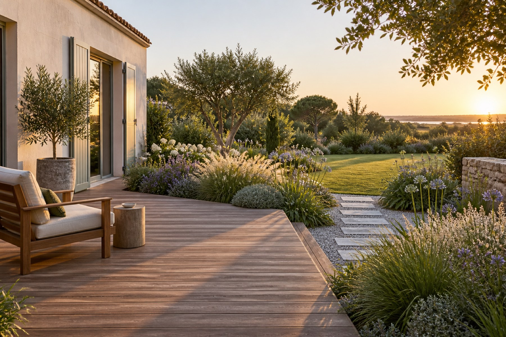

Mouilleron-le-Captif, terrasse et massifs
Une terrasse en bois qui ouvre sur la prairie.
Terrasse en ipé sur plots, allée en pas japonais vers la pelouse, massifs de vivaces et de graminées le long de la maison. Le propriétaire voulait manger dehors sans voir la route : la haie libre plantée à l'est y pourvoit depuis la deuxième année.
- Surface
- 0m²
- Durée
- 4semaines
- Végétaux
- 0plants